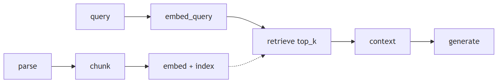
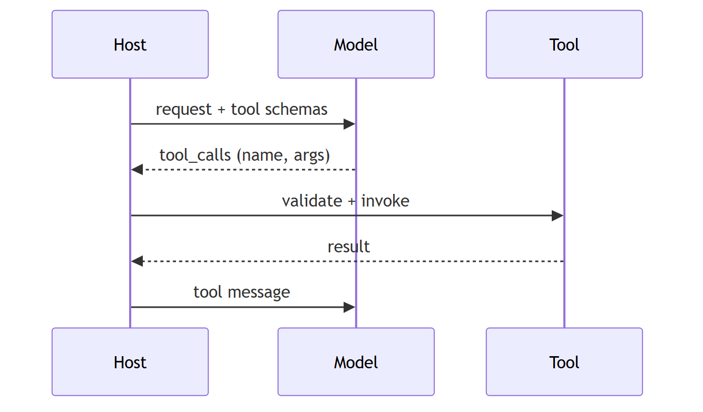
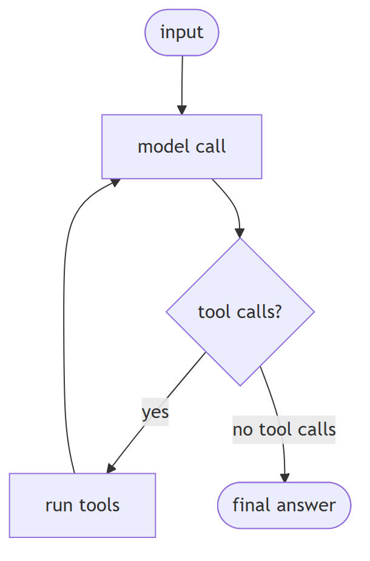
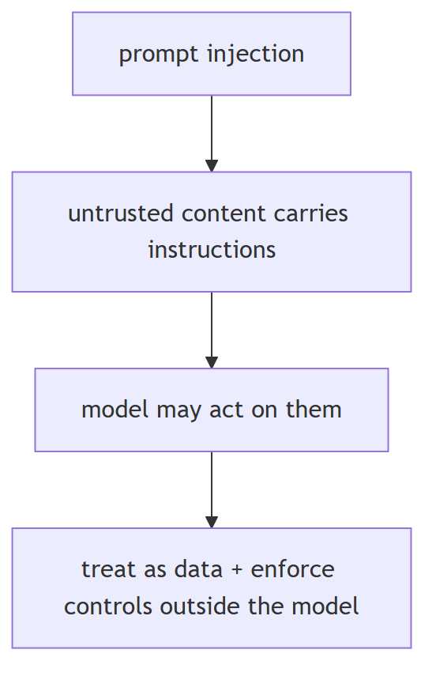

LLM terms glossary
1. Token
Concept basic
TL;DR. The smallest sub-word unit of text a model processes.
Key points.
- A sub-word piece, not a word.
- Count tokens, not words.
- Drives context limits and cost.
Concept. the smallest unit of text a model processes — usually a sub-word piece, not a full word.
2. Embedding
Concept basic
TL;DR. A numeric vector representing the meaning of text, used for similarity search.
Key points.
- Vector representation of meaning.
- Used for similarity search.
- One per query or document.
Concept. a numerical vector that represents the meaning of text, used for similarity search.
3. Context window
Concept basic
TL;DR. The maximum amount of text a model can process in a single request.
Key points.
- Max tokens per request.
- Bounds prompt + history + output.
- Exceeding it forces trimming/compaction.
Concept. the maximum amount of text a model can process in a single request.
4. Temperature
Concept basic
TL;DR. Controls sampling randomness; lower values produce more deterministic output.
Key points.
- Scales logits before sampling.
- Lower = more deterministic.
- 0 ≈ greedy.
Concept. controls output randomness at sampling; lower values produce more deterministic output.
5. Top-p (nucleus sampling)
Concept basic
TL;DR. Limits token selection to the smallest set whose cumulative probability exceeds p.
Key points.
- Cumulative-probability cutoff.
- Nucleus sampling.
- Alternative to top-k.
Concept. limits token selection to the smallest set of tokens whose combined probability exceeds p.
6. RAG
Concept basic
TL;DR. Giving a model external data by retrieving relevant passages and putting them in the prompt before generation.
Key points.
- Retrieve relevant passages.
- Put them in the prompt.
- Grounds generation in external data.
Concept. giving a model access to external data by retrieving relevant passages and putting them in the prompt before generation.

7. Chunking
Concept basic
TL;DR. Splitting documents into smaller pieces before embedding so retrieval returns relevant sections.
Key points.
- Split docs before embedding.
- Size and overlap matter.
- Affects retrieval granularity.
Concept. splitting documents into smaller pieces before embedding so retrieval returns relevant sections.
8. Vector database
Concept basic
TL;DR. A database built for similarity search over embeddings rather than exact-match queries.
Key points.
- Optimized for similarity search.
- Stores embeddings + metadata.
- Supports ANN indexes.
Concept. a database built for similarity search over embeddings rather than exact-match queries.
9. Reranking
Concept basic
TL;DR. Reordering retrieved documents by actual relevance (often a cross-encoder) after a broad initial retrieval.
Key points.
- Second-stage relevance ordering.
- Usually a cross-encoder.
- Retrieve many, keep few.
Concept. reordering retrieved documents by actual relevance (via a cross-encoder) after an initial broad retrieval.
10. Hallucination
Concept basic
TL;DR. Confident but factually incorrect or unsupported output.
Key points.
- Confident and wrong.
- Not grounded in source.
- Mitigate with grounding and checks.
Concept. confident but factually incorrect or unsupported output.
11. Fine-tuning
Concept basic
TL;DR. Further training a model on a specific dataset to adjust its behavior or style.
Key points.
- Adapts a pretrained model.
- Needs task data.
- Changes behavior, not just knowledge.
Concept. further training a model on a specific dataset to adjust its behavior or style.
12. Prompt engineering
Concept basic
TL;DR. Structuring input to get a reliable, specific output without changing the model.
Key points.
- Shape input, not weights.
- Improve reliability/format.
- Cheap and fast to iterate.
Concept. structuring input to get a reliable, specific output without changing the model.
13. Few-shot prompting
Concept basic
TL;DR. Providing a small number of examples in the prompt to guide output format or behavior.
Key points.
- A few examples in the prompt.
- Guides format/behavior.
- Costs tokens per call.
Concept. providing a small number of examples in the prompt to guide output format/behavior (a specific form of prompt engineering).
14. Chain-of-thought prompting
Concept basic
TL;DR. Asking the model to reason step by step before giving a final answer.
Key points.
- Intermediate reasoning steps.
- Improves multi-step accuracy.
- Can be implicit in reasoning models.
Concept. asking the model to reason step by step before giving a final answer (a reasoning-oriented prompt-engineering technique).
15. Function calling
Concept basic
TL;DR. A model's ability to emit a structured request to invoke an external tool or API.
Key points.
- Model emits structured tool calls.
- Tools described as schemas.
- Runtime executes and returns results.
Concept. a model's ability to emit a structured request to invoke an external tool/API.

16. Agent
Concept basic
TL;DR. A system where the model plans, calls tools, and decides its own next step in a loop.
Key points.
- Model decides next steps.
- Uses tools in a loop.
- Bounded by iterations/stopping.
Concept. a system where the model plans, calls tools, and decides its own next step in a loop.

17. Memory
Concept basic
TL;DR. Context an agent retains across turns (short-term) or sessions (long-term).
Key points.
- Short-term = current context window.
- Long-term = persisted across sessions.
- Retrieval chooses what to bring back.
Concept. context an agent retains across turns (short-term) or sessions (long-term).
18. Latency
Concept basic
TL;DR. The time between sending a request and receiving a complete response.
Key points.
- End-to-end response time.
- TTFT matters for streaming.
- Affected by model, context, tools.
Concept. the time between sending a request and receiving a complete response.
19. Quantization
Concept basic
TL;DR. Reducing a model's numerical precision to shrink size and speed up inference.
Key points.
- Lower-precision weights.
- Smaller/faster, some accuracy loss.
- Applies to weights and indexes.
Concept. reducing a model's numerical precision to shrink size and speed up inference.
20. Prompt injection
Concept basic
TL;DR. Malicious or unintended instructions embedded in input or retrieved content that hijack the model.
Key points.
- Untrusted content as instructions.
- Direct or indirect (retrieval/tools).
- Defend outside the model.
Concept. malicious or unintended instructions embedded in input or retrieved content that hijack the model.
